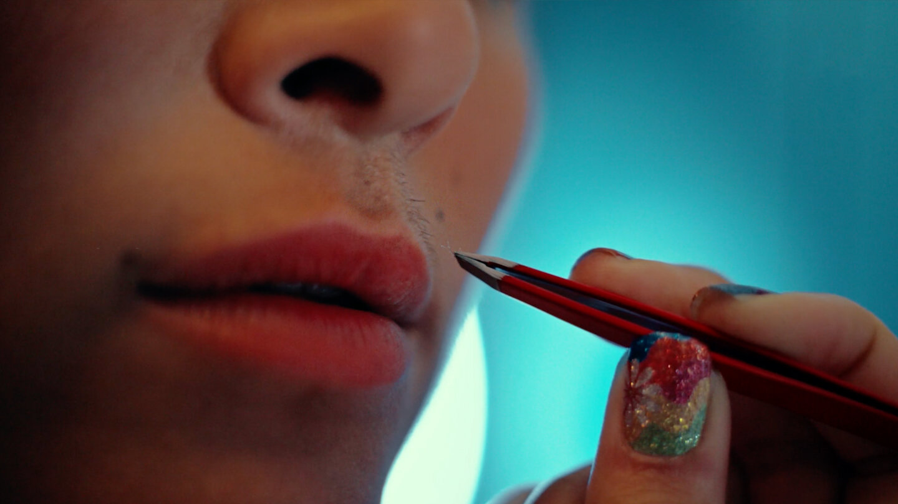

Philips Lumea — Be Free
in Your Own Skin

Challenge
Philips Lumea created the IPL hair removal category. By 2023, it was losing leadership in it. The brief was to reintroduce the brand and improve preference across markets. But the real opportunity ran deeper. Decades of advertising — across the entire beauty industry — had sold hair removal through the male gaze, with hairless as default and pressure dressed up as aspiration. As the category creator, Lumea had both the credibility and the standing to push back against that. The question was whether the work could go beyond a new campaign and actually shift the conversation.

Approach
The answer was to stop selling hair removal and start acknowledging the pressure around it. The strategic platform reframed the entire category conversation: not "remove your hair and feel free" but "the choice is yours, and we're here if you want us." To make that credible rather than performative, every decision flowed from the same principle — this had to be made by women, for women. An entirely female team built the campaign from the ground up. Real customers shot their own footage at home. Female illustrators gave each story its own visual voice.

Outcome
Brand recognition grew by an average of 38% across key markets, exceeding all targets. Return on ad spend outperformed in every market — including 6.3x in Germany, 4.3x in the UK, and 3x in Italy. The campaign was recognised with two Lovie Awards Silver (Best Social Media Campaign and Diversity, Equity & Inclusion), a Shorty Impact Awards Gold in Storytelling, and a Luum Awards Gold for Essence of Message. More than the numbers: it started a conversation the category had been avoiding for years.